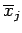

Inhalt Index DeskTop Bronstein

 Wahrscheinlichkeitsrechnung und Mathematische Statistik Mathematische Statistik Beschreibende Statistik
Wahrscheinlichkeitsrechnung und Mathematische Statistik Mathematische Statistik Beschreibende Statistik


Nachdem die Meßwerte gemäß Abschnitt Statistische Erfassung gegebener Meßwerte bearbeitet worden sind, können die folgenden Parameter zur Charakterisierung der Verteilung, die den Meßwerten zu Grunde liegt, bestimmt werden:
 |
(16.129a) |
Wenn die Mittelwerte  und Häufigkeiten hj der Klassen j benutzt werden, gilt
| (16.129b) |
 |
(16.130a) |
Wenn die Mittelwerte und Häufigkeiten hj der Klassen j benutzt werden, gilt
 |
(16.130b) |
Häufig wird auch die Klassenmitte uj an Stelle von benutzt.
| (16.131a) |
und wird im diskreten Falle bestimmt durch
| (16.131b) |
bestimmt.
| (16.132) |